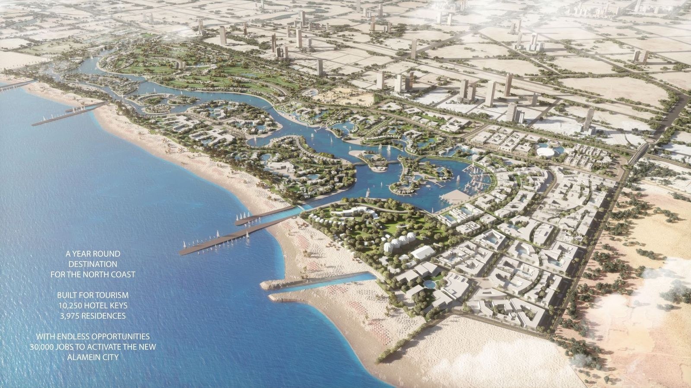

Al Alamein Riviera Vision Master Plan
Master plan · North Coast (New Alamein), Egypt
Vision master plan for a coastal destination of about 996 hectares in New Alamein on Egypt's North Coast, for China State Construction, with WATG.
Partners

Client
China State Construction
More from North Coast
 Regional Vision for the North Coast and Tourism Development Master Plan for Fuka-MatrouhFuka-Matrouh sub-region, North Coast · 2011
Regional Vision for the North Coast and Tourism Development Master Plan for Fuka-MatrouhFuka-Matrouh sub-region, North Coast · 2011 Marina Matrouh Tourist CentreMarsa Matrouh, North Coast · 1994-2004
Marina Matrouh Tourist CentreMarsa Matrouh, North Coast · 1994-2004 Marina El AlameinNorth Coast · 1985-1997
Marina El AlameinNorth Coast · 1985-1997 Pyramids Plateau Destination Master PlanGiza · 2024-2025
Pyramids Plateau Destination Master PlanGiza · 2024-2025 Golden Gate, New CairoNew Cairo · 2020-2021
Golden Gate, New CairoNew Cairo · 2020-2021 Cairo Media CityGiza · 2026
Cairo Media CityGiza · 2026